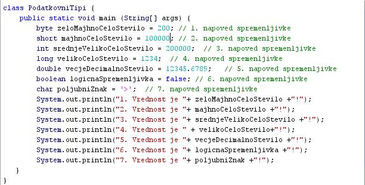
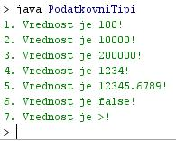

PODATKOVNI TIPI SPREMENLJIVK
- Razlikujemo osem osnovnih podatkovnih tipov spremenljivk:
- Podatkovni tip "byte" je osembitno celo število s predznakom. Obsega vrednosti od -128 do +127. Ta podatkovni tip je priporoèljiv za shranjevaje podatkov v velikih tabelah ali poljih, kjer je varèevanje s pomnilniškim prostorom še posebej pomembno.
- Podatkovni tip "short" je šestnajstbitno celo število s predznakom. Obsega vrednosti od -32.768 do +32.767. Tudi ta tip podatkov uporabimo pri velikih tabelah ali poljih, kjer je varèevanje s pomnilniškim prostorom zares pomembno.
- Podatkovni tip "integer" je dvaintridesetbitno celo število s predznakom. Obsega vrednosti od -2.147.483.648 do +2.147.483.647. Obièajno je v programih ta podatkovni tip privzet za cela števila. Ta podatkovni tip premore dovolj velik obseg za veliko veèino primerov, na katere lahko pri svojem delu naletimo. Èe bomo morda delali z veèjimi števili kot 2.147.483.647, moramo uporabiti podatkovni tip "long"
- Podatkovni tip "long" je štiriinšestdesetbitno celo število s predznakom. Obsega vrednosti od -9.223.372.036.854.775.808 do +9.223.372.036.854.775.807. Ta tip podatkov uporabljamo samo za resnièno ogromna števila, katerih vrednosti presegajo obseg podatkovnega tipa "integer".
- Podatkovni tip "float" uporabimo za napovedovanje ali deklariranje decimalnih števil, kjer natanènost ni tako zelo pomembna. Ta podatkovni tip je priporoèljiv za shranjevaje podatkov v velikih tabelah ali poljih, kjer je varèevanje s pomnilniškim prostorom še posebej pomembno. Tega tipa podatkov nikoli ne smemo uporabiti za natanèno raèunanje, denimo pri raèunanju denarnih zneskov.
- Podatkovni tip "double" uporabimo za napovedovanje ali deklariranje decimalnih števil. To je obièajno tudi privzeti tip podatkov za decimalna števila. Tega tipa podatkov nikoli ne smemo uporabiti za natanèno raèunanje, denimo pri raèunanju denarnih zneskov. Za take raèune uporabljamo druge tipe podatkov oziroma razrede.
- Podatkovni tip "boolean" premore dve vrednosti spremenljivke: "true" (resnièno ali pravilno) in "false" (neresnièno ali napaèno). Ta tip spremenljivke uporabljamo pri programiranju za preverjanje in oznaèevanje izpolnitve postavljenih pogojev v krmilnih pogojnih stavkih. Ta tip podatka vsebuje en bit informacije.
- Podatkovni tip "char" je en sam znak. Lahko je èrka, številka ali katerikoli drugi posebni znak, ki ga premore tipkovnica.
VAJA 7:
- V okolju za pisanje izvorne kode v jeziku Java, za prevajanje in za interaktivno delo zapiši program "PodatkovniTipi".
- Kodo lahko tudi kopiraš iz te datoteke in jo prilepiš v okolje, v katerem pišeš programèke. Pozor: koda, ki jo boš kopiral/a, vsebuje eno, dve, tri ali štiri napake. Èe želiš, da bo program deloval, moraš napake odkriti in jih odpraviti.
- Izvorno kodo shrani pod imenom "ImePriimek07.java". ImePriimek je seveda tvoje lastno ime in priimek.
- Datoteko "ImePriimek07.java" prevedi.
- Pri prevajanju bo prevajalnik našel v izvorni kodi dve napaki. Poskusi ju najti in ju odpravi. Pri iskanju napak si lahko pomagaš s sliko izpisa rezultatov tega programèka.
- Prevedeno datoteko zaženi, preveri rezultat v oknu za interaktivno delo in poklièi profesorja, da vidi rezultat.
1. Vprašanja:
1. Koliko bitov premore število podatkovnega tipa "byte"?
2. Koliko bitov premore število podatkovnega tipa "short"?
3. Koliko bitov premore število podatkovnega tipa "integer"?
4. Koliko bitov premore število podatkovnega tipa "long"?
5. Kateri podatkovni tipi so namenjeni shranjevanju celih števil?
6. Kateri podatkovni tipi so namenjeni shranjevanju decimalnih števil?
7. Koliko razliènih vrednosti lahko zavzame spremenljivka podatkovvnega tipa "boolean"?
8. Katere podatkovne tipe uporabimo, èe želimo ravnati varèno s pomnilniškim prostorom?
9. Opiši vzrok prve od dveh (predvidenih) napak pri prevajanju in njeno rešitev.
10. Opiši vzrok druge od dveh (predvidenih) napak pri prevajanju in njeno rešitev.
2. Zapiši od ene do pet kljuènih besed, ki povzemajo vsebino te uène enote.
3. Povezave do dodatnih informacij.
Gradiva na spletnih straneh fakultete za matematiko in fiziko v Ljubljani.
Spletni priroènik proizvajalca programskega okolja Java. To je podjetje Sun.
|